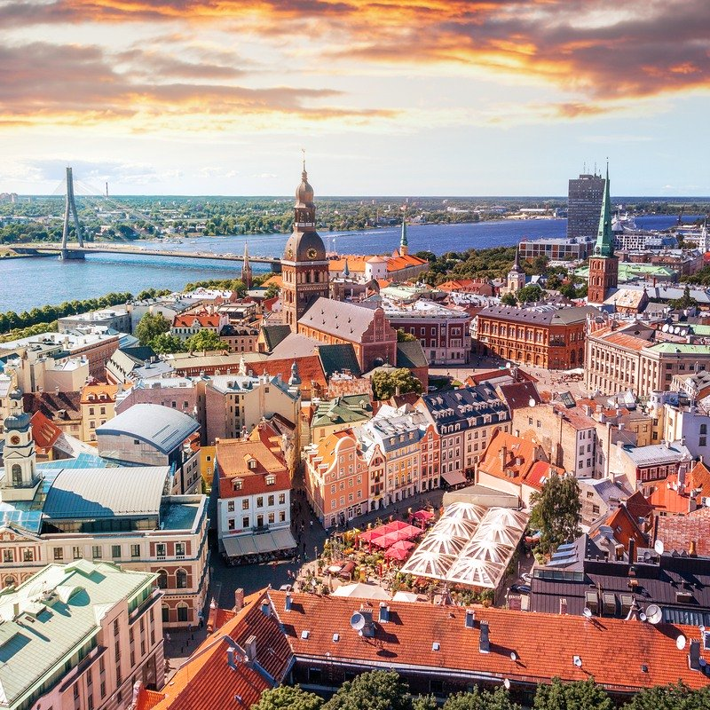

A little bit about Elina

Hi! My name is Elina. I have made this website to tell a little bit about myself. I want to tell you short story about where I am from, what have I done previously, show some of my favourite things and share my aspirations for my future. Therefore, welcome to the world of silliness. :)
I was born and raised in the capital of Latvia - Riga. I have always been a city girl and I can never imagine myself living in a village. Maybe this is one of the reasons on why I decided to move to Manchester around 7 years ago as it is less busy than London and is a bit more “hipsterish” than any other city I know.